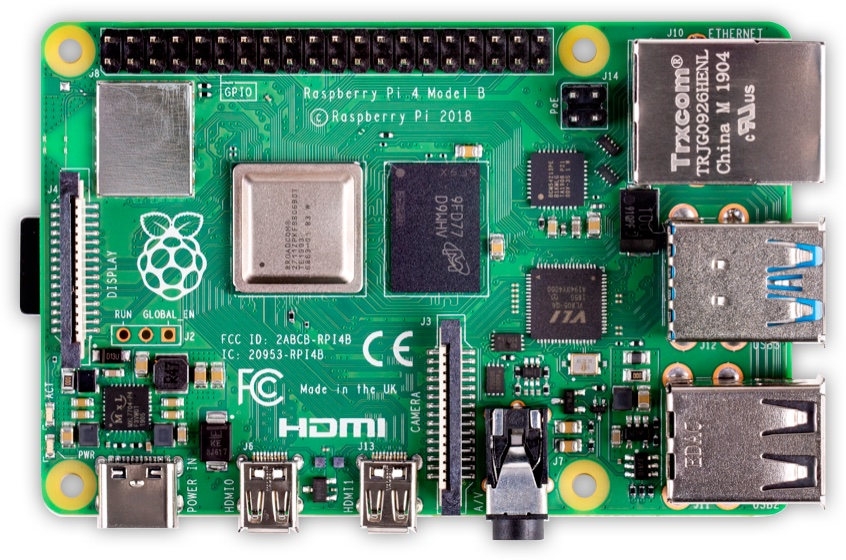
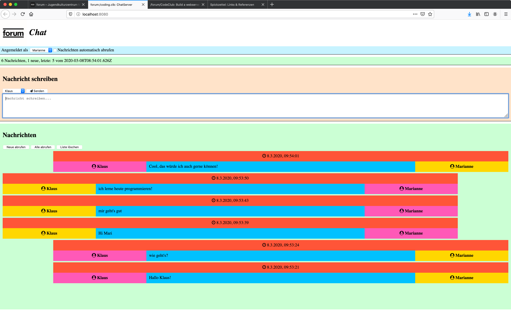
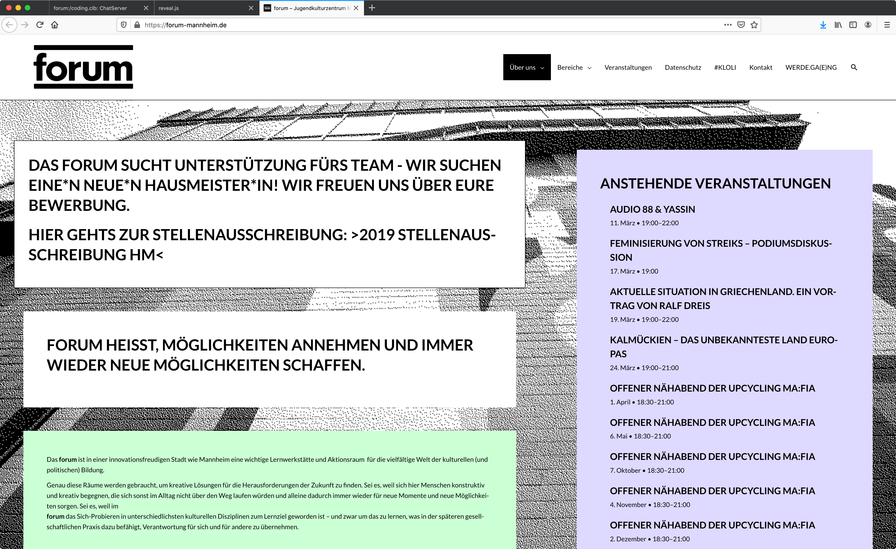
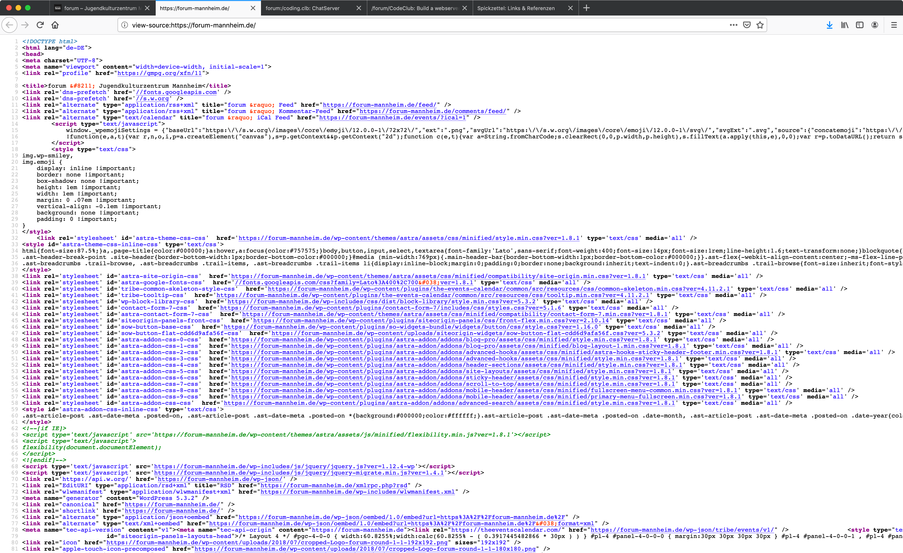
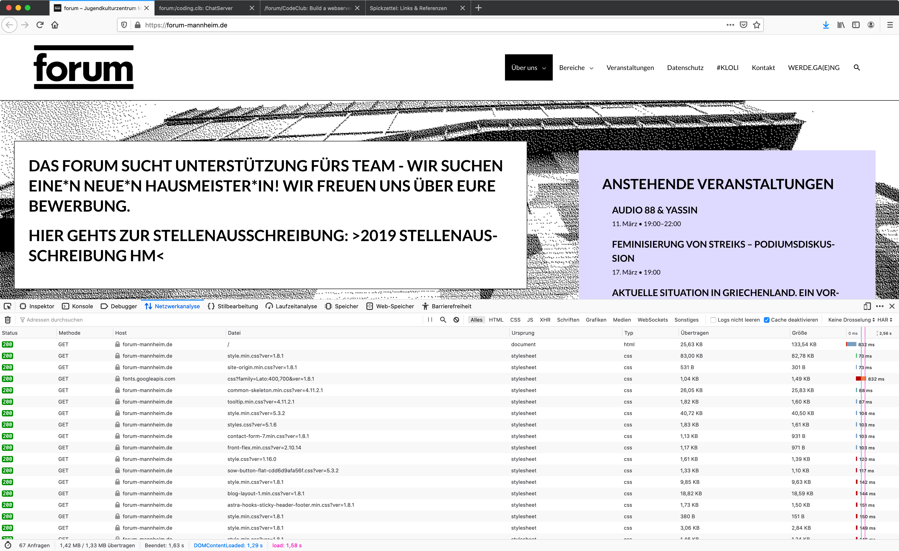
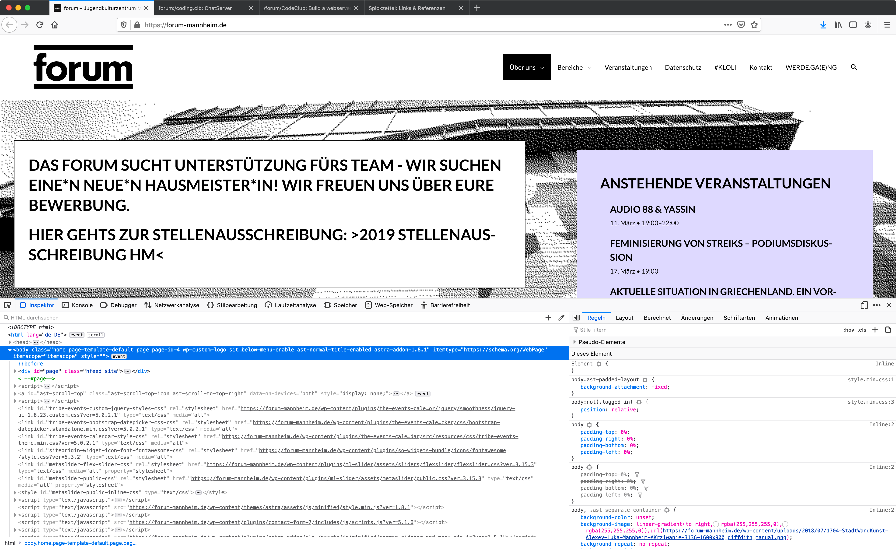
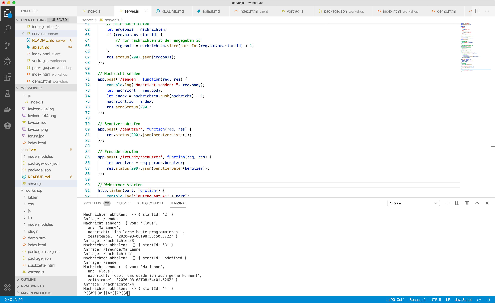

/forum/CodeClub: Build a webserver!
Das Internet steckt heute in jeder Hosentasche und Webseiten und Apps regieren den Alltag. Aber wie funktionieren eigentlich dieses Internet und verbreitete Dienste wie WhatsApp? Und warum sind Programmierer heute so gefragt? Kann ich sowas auch selbst machen? Natürlich!
Stellt Euch doch mal kurz vor!
Und vielleicht auch, ob/was Ihr schonmal programmiert habt und was Ihr heute gerne erreichen wollt
Was machen wir heute?
Wir programmieren gemeinsam einen einfachen Webserver als Chatsystem und lernen dabei etwas über Netzwerke, Programmieren mit JavaScript und Node.js, Browser und Webserver.
Kurzer Hinweis
Der Großteil dieser Präsentation und des Workshop-Materials ist auf Deutsch, allerdings enthalten die
verwendeten Programmiersprachen viele englische Begriffe.
Referenzen auf weiterführende Seiten sind sind wo möglich ebenfalls auf Deutsch, aber im Internet gibt es sehr viel
gute Dokumentation auf Englisch, insofern sind Englischkenntnisse von Vorteil ;-)
Linux, Raspi, Kommandozeile (Terminal)
Browser, HTML, CSS
WebServer, JavaScript
Programmieren eines Chatservers!
günstiger Mini-Computer (~35 EUR)

Open Source-Betriebssystem

cd, ls, mkdir, rm, rm -rfEin paar Hinweise findet Ihr auf https://www.ernstlx.com/linux90bash.html.
10 Minuten

http://files.jetztgrad.net/webserver/webserver.zip
Bitte Runterladen und Auspacken, am besten in den Dokumenten-Ordner....
webserver/workshop/index.htmlAußerdem hilfreich: der Spickzettel:
webserver/workshop/spickzettel.html

Ein Browser hat alles dabei, um unter die Haube zu schauen:
Developer Tools für Neugierige!



Ein Grundgerüst zum Kopieren findet Ihr auf https://wiki.selfhtml.org/wiki/HTML.
10 Minuten
Eine Einführung in CSS findet Ihr auf https://wiki.selfhtml.org/wiki/CSS.
10 Minuten
Ziel: ein Knopf, der etwas auf der Console ausgibt, wenn man ihn drückt
Hinweis: HTML-Formular,
onsubmit='tuwas()'
Einen Startpunkt zu JavaScript findet Ihr auf https://developer.mozilla.org/de/docs/Web/JavaScript.
10 Minuten
- was wollen wir erreichen?
- wie gehen wir vor?
Am besten in vielen kleinen Schritten!
Frontend für die Benutzeroberfläche (im Browser)
Backend für die Schwerarbeit (der Webserver!)
Habt Ihr schon gemacht, siehe die Beispiele oben!
nodejs!Rezept für JavaScript auf dem Backend: man nehme die JavaScript-Maschine aus Chromium/Chrome und mache sie selbstständig lauffähig. Noch etwas Netzwerk-Programmierung dazu und fertig!
- Web Browser
- Terminal
- Eine Suchmaschine, z.B. Google
- Texteditor, oder besser: eine Entwicklungsumgebung (IDE - Integrated Development Environment)
- Syntax Highlighting
- Fehlersuche
- Debugging
Kurze Demo...

Wie soll die Grundstruktur aussehen?
Hinweis:
npm init, Datei server.js anlegen, Starten mit nodejs server.js, Ausgabe mit console.log('Hallo, welt!')
Einen Startpunkt zu Express findet Ihr auf https://gridscale.io/community/tutorials/node-js-beginner-guide/.
10 Minuten
Hallo, Welt!Hinweise:
nodejs server.jsnpm install express --savevar express = require('express');Einen Startpunkt zu Express findet Ihr auf https://expressjs.com/de/starter/hello-world.html.
10 Minuten
HTTP, TCP/IP, IP-Adresse, URL, ...
Hinweise:
Dateien aus unserem
client Verzeichnisapp.use(express.static('../client'));Einen Startpunkt zu Express findet Ihr auf https://expressjs.com/de/starter/static-files.html.
10 Minuten
Hinweise:
Formular einfügen
Parameter für Texteingabe:
an, textAction für Formular:
/sendenEinen Startpunkt zu Formularen findet Ihr auf https://wiki.selfhtml.org/wiki/HTML/Formulare.
10 Minuten
Hinweise:
app.post('/senden', ...>Test mit Formular aus dem vorigen Schritt
Einen Startpunkt zu Bearbeitung von HTTP-Anfragen findet Ihr auf https://expressjs.com/de/starter/basic-routing.html.
10 Minuten
Lösung:
var nachrichten = [];
// Nachricht empfangen
app.post('/senden', function(req, res) {
console.log("Nachricht senden: ", req.body);
let nachricht = req.body;
let index = nachrichten.push(nachricht) - 1;
// Der nachricht eine Id (Index) mitgeben
nachricht.id = index;
res.redirect('/');
});
Hinweise:
app.post('/nachrichten/', ...>Test durch Aufruf unseres Servers: http://localhost:8080/nachrichten/
Einen Startpunkt zu Bearbeitung von HTTP-Anfragen findet Ihr auf https://expressjs.com/de/starter/basic-routing.html.
10 Minuten
Lösung:
// Gespeicherte Nachrichten zurück geben
app.get('/nachrichten/', function(req, res) {
console.log("Nachrichten abholen: ", req.body, req.params);
// alle nachrichten
let ergebnis = nachrichten;
res.status(200).json(ergebnis);
});
Hinweise:
Neue JavaScript-Datei einbinden:
js/index.jsAbrufen der Nachrichten von
/nachrichtenAnzeigen der Ergebnisse durch kopieren der Muster-Vorlage und Einfügen der Texte
Einen Startpunkt zum Aufruf von Backend-Funktionalität findet Ihr auf https://wiki.selfhtml.org/wiki/JavaScript/Window/fetch.
Und in der fertigen Datei ;-)
30 Minuten
Lösung:
Wir spicken in
webserver/fertig/server/server.js :-)
Wir machen es bunt mit CSS!
Hinweise:
Benutzerdaten laden:
var benutzer = require('./benutzer.json');
Daten für einen bestimmten Benutzer suchen und zurück gebenRuft einfach mal die URL der anderen auf!
Ruft Eure Seite mit Eurem Handy auf!
Einfaches Umschalten zwischen Benutzern
Leeren des Textfelds nach dem Abschicken
...
Optimierte Anzeige für Mobilgeräte, PCs, Fernseher, ...
Dauerhaftes Speichern der Nachrichten in einer Datenbank
HTTPS (TLS/SSL)
Anmelden
Am besten ab in die Cloud! (Aber.... s. nächsten Punkt!)
Persönliche Daten, Privatsphäre, DSGVO!
Entwickler, Designer, Produktmanager, Tester, ...
Automatisierte Tests
Versionierung (Git), web-basierte Systeme, automatische Builds
lokal auf eigenem Rechner entwicklen, aber Ausführen in einem Rechenzentrum oder in der Cloud
API = Application Programming Interface
s. Beispiel auf https://wiki.openstreetmap.org/wiki/DE:Karte_in_Webseite_einbinden
HTTPS, SLL/TLS, Zertifikate
Cookies und andere (Krümel)Monster)
Die Folgen: Werbung, Tracking
Was hat Euch gefallen, was nicht?
Was habt Ihr mitgenommen?
Was probiert Ihr jetzt vielleicht selbst mal zu Hause aus? Was würde Euch sonst interessieren?
Raspberry Pi: https://www.raspberrypi.org/homepage-9df4b/static/hero-shot-33d83b8c5fa0933373dabcc9462b32a3.png
Raspberry Pi Logo: https://www.raspberrypi.org/trademark-rules/
Tux Logo https://de.wikipedia.org/wiki/Datei:Tux.png
Englische Flagge: https://de.wikipedia.org/wiki/Union_Jack#/media/Datei:Flag_of_the_United_Kingdom_(3-5).svg